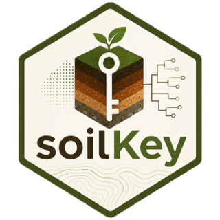

CPCS 1967 subgroup gates (internal)
Source:R/diagnostics-cpcs-subgroups.R
cpcs1967_subgroups.RdThe tests of the 276 subgroups of the French soil classification (CPCS
1967), read by classify_cpcs1967 in the order of
inst/rules/cpcs1967/subgroups/. Each returns a
DiagnosticResult.
Usage
hydromorphic_signs_cpcs(
pedon,
within = 100,
from = 0,
window = "depth",
grade = "any",
water_table = FALSE,
concretions = FALSE,
manganese = FALSE,
none_above = FALSE
)
deep_hydromorphy_cpcs(pedon)
frost_form_cpcs(pedon, kind, unrecorded = "undecided")
humus_form_cpcs(pedon, kind)
alpine_belt_cpcs(pedon)
salt_cpcs(pedon, within = 100, ec = 4)
sodium_cpcs(pedon, within = 100, esp = 6, in_textural_b = FALSE)
vertic_cpcs(pedon, from = 0, prismatic_b = FALSE, coarse = FALSE)
slickensides_moderate_cpcs(pedon)
self_mulching_cpcs(pedon, depth = 10)
calcareous_crust_cpcs(
pedon,
kind = "accumulation",
mineral = "carbonate",
where = "any"
)
carbonate_nodules_cpcs(pedon)
recalcified_cpcs(pedon)
rendzina_carbonate_cpcs(pedon, kind)
hard_rock_contact_cpcs(pedon, under = "A", within = NA, noncalcareous = FALSE)
solum_depth_cpcs(pedon, at_most = NA, above = NA)
a1_thickness_cpcs(pedon, above = 25)
organic_matter_cpcs(pedon, rows = "a", at_least = NA, above = NA, below = NA)
climate_cpcs(pedon, kind)
clay_index_cpcs(
pedon,
above = NA,
at_most = NA,
below = NA,
not_eroded = FALSE
)
b_colour_cpcs(pedon, kind)
b_ph_cpcs(pedon, below = 5.5)
allophane_cpcs(pedon)
tongues_cpcs(pedon)
reworked_cpcs(
pedon,
where = "profile",
or_eroded = FALSE,
sand_fractions = FALSE
)
weatherable_minerals_cpcs(pedon, at_least = 3, volcanic = FALSE)
aeolian_addition_cpcs(pedon, deflation = FALSE)
eluviated_cpcs(pedon)
indurated_cpcs(pedon, where = "b", within = 100)
concretions_cpcs(pedon, where = "within", within = 100)
saturated_poor_sand_cpcs(pedon)
humic_horizon_cpcs(pedon, kind)
gibbsitic_dark_cpcs(pedon)
podzol_b_kind_cpcs(pedon, kind)
no_b_cpcs(pedon)
podzolic_path_cpcs(pedon, path)
stagnogley_a2_cpcs(pedon)
podzol_gley_cpcs(pedon, kind)
peat_trophic_cpcs(pedon, kind)
anmoor_cpcs(pedon, kind)
gley_depth_cpcs(pedon, below = NA, at_least = NA)
pseudogley_kind_cpcs(pedon, kind)
amphigley_kind_cpcs(pedon, kind)
solonchak_surface_cpcs(pedon, kind)
acid_sulphate_cpcs(pedon)
solod_cpcs(pedon, kind)
solonetz_structure_cpcs(pedon, kind)
solonchak_solonetz_cpcs(pedon, kind)Arguments
- pedon
A
PedonRecord.- within, from, window, grade, water_table, concretions, manganese, none_above, kind, unrecorded, ec, esp, in_textural_b, prismatic_b, coarse, mineral, where, under, noncalcareous, at_most, above, below, at_least, rows, not_eroded, deflation, or_eroded, sand_fractions, volcanic, path, depth
Arguments written in the rule files.